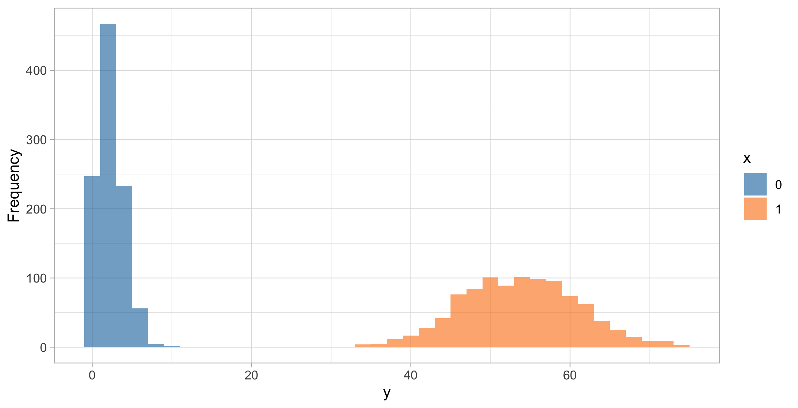
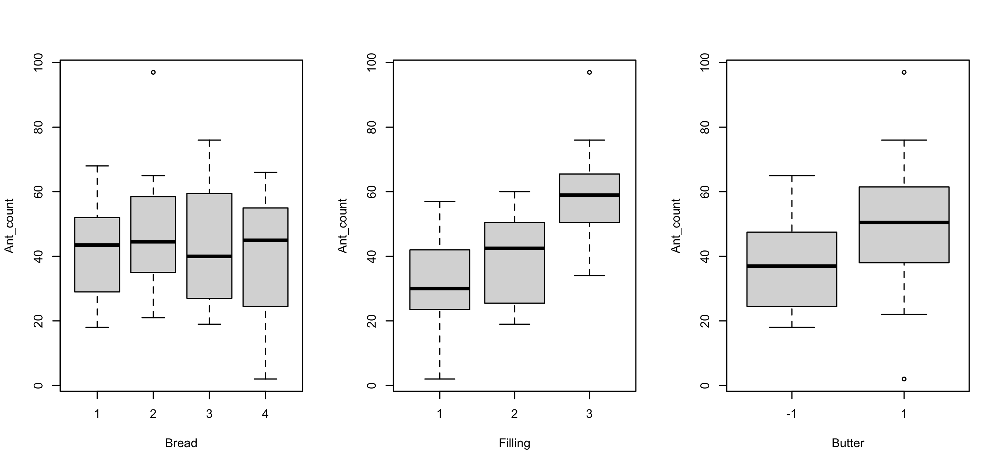

Quasi-likelihoods
Statistics III - CdL SSE
Università degli Studi di Milano-Bicocca
Homepage
In Unit C and Unit D we encountered overdispersion as a common failure mode of binomial and Poisson regression.
This unit presents quasi-likelihoods, which handle overdispersion without specifying a parametric distribution for the response.
Only the first two moments of Y_i are specified, together with the link function.
This yields estimators that are robust to misspecification, in the same spirit of Unit A.
Quasi-likelihoods were introduced by Wedderburn (1974), extending the GLM framework of Nelder and Wedderburn (1972).
Overdispersion
Overdispersion: recap
Recall that in a GLM the response is Y_i \overset{\text{ind}}{\sim} \text{ED}(\mu_i, a_i(\phi)v(\mu_i)), with g(\mu_i) = \eta_i = \bm{x}_i^T\beta, so that \mathbb{E}(Y_i) = \mu_i, \qquad \text{var}(Y_i) = a_i(\phi)v(\mu_i) = \frac{\phi}{\omega_i}v(\mu_i), where v(\cdot) is the variance function, \phi the dispersion and \omega_i are known weights.
In Poisson regression we have \omega_i = 1, v(\mu_i) = \mu_i and \phi = 1 is fixed by the model.
In binomial regression we have \omega_i = m_i, v(\mu_i) = \mu_i(1 - \mu_i) and again \phi = 1 is fixed.
We say that the data present overdispersion when the actual variability of the observations is larger than the one implied by the model, namely when \text{var}(Y_i) = \textcolor{red}{\phi}\frac{v(\mu_i)}{\omega_i}, \qquad \text{with} \quad \phi > 1. In such a case the Poisson or the binomial model is misspecified.
Where does overdispersion come from?
Unobserved heterogeneity. Subjects sharing the same covariate values may still differ because of variables that were not recorded. If Y_i \mid U_i \sim \text{Poisson}(U_i\mu_i) with \mathbb{E}(U_i) = 1 and \text{var}(U_i) = \sigma^2, then \mathbb{E}(Y_i) = \mu_i, \qquad \text{var}(Y_i) = \mu_i + \sigma^2\mu_i^2 > \mu_i. Note that this mechanism produces a quadratic variance function, not \phi\mu_i.
Positive dependence. The m_i Bernoulli trials forming a binomial observation may be correlated, e.g. littermates, pupils in the same class, members of the same household; see Agresti (2015), Section 8.2.1.
- Misspecification of the mean. A large X^2 may simply be due to an omitted covariate, a missing interaction or a wrong link: in this case correcting for overdispersion is not the right remedy.
Adjusting the standard errors is appropriate only if the structural part of the model, that is \mathbb{E}(Y_i) = g^{-1}(\bm{x}_i^T\beta), is correctly specified.
Detecting overdispersion
The natural diagnostic is the generalized Pearson statistic introduced in Unit B: X^2 = \sum_{i=1}^n \omega_i \frac{(y_i - \hat{\mu}_i)^2}{v(\hat{\mu}_i)} = \sum_{i=1}^n r_{i, P}^2.
When \phi = 1 and the model is correct, under small-dispersion asymptotics we have X^2 \: \dot{\sim} \: \chi^2_{n-p}, therefore \mathbb{E}(X^2) \approx n - p. A value X^2 \gg n-p is evidence of overdispersion.
The same reasoning applies to the residual deviance D(\bm{y}; \hat{\bm{\mu}}), since X^2 and D(\bm{y}; \hat{\bm{\mu}}) are asymptotically equivalent.
The method of moments estimator of Unit B summarizes the amount of overdispersion: \hat{\phi} = \frac{X^2}{n-p} = \frac{1}{n-p}\sum_{i=1}^n \omega_i \frac{(y_i - \hat{\mu}_i)^2}{v(\hat{\mu}_i)}.
- Values \hat{\phi} \gg 1 indicate overdispersion; \hat{\phi} < 1 indicates the (rarer) underdispersion.
A common mistake: marginal versus conditional variance
A frequent shortcut is to compare the sample mean and the sample variance of the response, and to declare overdispersion whenever \text{var}(y) \gg \bar{y}. This is wrong.
The Poisson assumption concerns the conditional distribution of Y_i given the covariates: nothing forces the marginal distribution of the response to satisfy \text{var}(Y) = \mathbb{E}(Y).
set.seed(123)
n_sim <- 2000
x_sim <- rbinom(n_sim, size = 1, prob = 0.5) # binary covariate
y_sim <- rpois(n_sim, lambda = exp(1 + 3 * x_sim)) # no overdispersion at all
c(mean = mean(y_sim), variance = var(y_sim)) mean variance
28.2105 691.1528 - The data were generated by a Poisson regression model, hence there is no overdispersion, and yet the marginal variance is more than 20 times the marginal mean.
A common mistake: marginal versus conditional variance

- The marginal distribution is bimodal: the excess variability is entirely explained by the covariate.
m_sim <- glm(y_sim ~ x_sim, family = poisson)
sum(residuals(m_sim, type = "pearson")^2) / m_sim$df.residual # phi_hat[1] 1.009118- The correct diagnostic, \hat{\phi} = X^2/(n-p), is close to one, as it should be.
Two remedies
(i) Quasi-likelihoods. Keep the mean structure g(\mu_i) = \bm{x}_i^T\beta and the variance function v(\mu_i), but treat \phi as an unknown parameter to be estimated. No parametric distribution is assumed.
(ii) Parametric overdispersed models. Replace the Poisson with a negative binomial (Unit D), or the binomial with a beta-binomial (Unit C).
The quasi-likelihood approach is simpler and more flexible: it requires weaker assumptions and it is obtained at essentially no computational cost.
The parametric approach allows fully likelihood-based inference (AIC, log-likelihood ratio tests, prediction of the whole distribution), at the price of a stronger assumption.
- The two approaches are not equivalent: they give the same point estimates only in special cases, since e.g. the negative binomial implies the quadratic variance function v(\mu_i) = \mu_i + \mu_i^2/\alpha.
The quasi-likelihood model
A motivating remark
Recall the Gaussian linear model of Unit A, whose maximum likelihood estimator solves the normal equations \bm{X}^T(\bm{y} - \bm{X}\beta) = \bm{0}, giving \hat{\beta} = (\bm{X}^T\bm{X})^{-1}\bm{X}^T\bm{y}.
Under the full Gaussian assumption \bm{\epsilon} \sim \text{N}_n(\bm{0}, \sigma^2 I_n) the exact distribution \hat{\beta} \sim \text{N}_p(\beta, \sigma^2(\bm{X}^T\bm{X})^{-1}) is available.
- However, we saw that under the much weaker second-order assumptions \mathbb{E}(\bm{\epsilon}) = \bm{0} and \text{var}(\bm{\epsilon}) = \sigma^2I_n, the estimator \hat{\beta} remains unbiased, efficient (Gauss-Markov) and asymptotically normal.
The normality assumption is therefore used to obtain the exact distribution of \hat{\beta}, but it is not needed for its fundamental properties. If the normal model is misspecified but the second-order assumptions hold, the inference remains valid for n large enough.
- The natural question is whether the same happens for the maximum likelihood estimator of a GLM. The answer, as we shall see, is yes.
Second-order assumptions
- The starting point of Wedderburn (1974) is the following remark. The likelihood equations of a GLM, derived in Unit B, \sum_{i=1}^n \omega_i\frac{(y_i - \mu_i)}{v(\mu_i)}\frac{x_{ir}}{g'(\mu_i)} = \sum_{i=1}^n \frac{(y_i - \mu_i)}{\text{var}(Y_i)}\frac{\partial \mu_i}{\partial \beta_r}= 0, \qquad r=1,\dots,p, depend on the distribution of Y_i only through \mathbb{E}(Y_i) = \mu_i and \text{var}(Y_i) = a_i(\phi)v(\mu_i).
The quasi-likelihood model
We only assume the following second-order conditions, for i=1,\dots,n:
(E.1) Mean structure: \quad\mathbb{E}(Y_i) = \mu_i = g^{-1}(\bm{x}_i^T\beta);
(E.2) Mean-variance relationship: \quad \text{var}(Y_i) = \dfrac{\phi}{\omega_i}v(\mu_i), with \phi > 0 unknown;
(E.3) Independence: \quad Y_i and Y_j are independent for i \neq j.
- This is a semiparametric model: the family of all distributions satisfying (E.1)-(E.3) cannot be indexed by a finite number of parameters, yet the assumptions on the first two moments are fully parametric.
Second-order assumptions of notable models
- It is instructive to make (E.1)-(E.3) explicit for the models of Unit B. The dispersion \phi is now free, whereas \omega_i and v(\cdot) are inherited from the parametric model.
| Model | \omega_i | v(\mu_i) | \text{var}(Y_i) under (E.2) | canonical g(\mu_i) |
|---|---|---|---|---|
| \text{N}(\mu_i, \sigma^2) | 1 | 1 | \phi | \mu_i |
| \text{Poisson}(\mu_i) | 1 | \mu_i | \phi\,\mu_i | \log{\mu_i} |
| \frac{1}{m_i}\text{Binomial}(m_i,\mu_i) | m_i | \mu_i(1-\mu_i) | \phi\,\dfrac{\mu_i(1-\mu_i)}{m_i} | \text{logit}(\mu_i) |
| \text{Gamma}(\alpha, \alpha/\mu_i) | 1 | \mu_i^2 | \phi\,\mu_i^2 | -1/\mu_i |
For the Gaussian and the Gamma models nothing changes: \phi was already an unknown parameter. The gain in flexibility concerns the discrete responses — counts and proportions — for which the parametric model imposes \phi = 1 and the variance is entirely determined by the mean.
The quasi-score function
Under (E.1)-(E.3) we define the quasi-score function \bm{q}(\bm{y};\beta) = (q_1(\bm{y};\beta),\dots,q_p(\bm{y};\beta))^T as q_r(\bm{y};\beta) = \sum_{i=1}^n \frac{(y_i - \mu_i)}{\text{var}(Y_i)}\frac{\partial \mu_i}{\partial \beta_r} = \frac{1}{\phi}\sum_{i=1}^n \omega_i\frac{(y_i - \mu_i)}{v(\mu_i)}\frac{x_{ir}}{g'(\mu_i)}, \qquad r = 1,\dots,p. In matrix notation, exactly as in Unit B, \bm{q}(\bm{y};\beta) = \bm{D}^T \bm{V}^{-1}(\bm{y} - \bm{\mu}) = \bm{X}^T\bm{W}_0(\bm{y} - \bm{\mu}), where \bm{V} = \text{var}(\bm{Y}) = \phi \,\text{diag}(v(\mu_1)/\omega_1,\dots,v(\mu_n)/\omega_n), the matrix \bm{D} has elements d_{ir} = x_{ir}/g'(\mu_i), and \bm{W}_0 = \text{diag}(w_{0,1},\dots,w_{0,n}) with w_{0,i} = \frac{\omega_i}{\phi\, v(\mu_i) g'(\mu_i)}, \qquad i=1,\dots,n.
- The quasi-likelihood estimator \hat{\beta} is the solution of \bm{q}(\bm{y};\beta) = \bm{0}, which does not depend on \phi.
The quasi-score is a score in disguise
- Whenever the response really belongs to an exponential dispersion family, \bm{q}(\bm{y};\beta) is exactly the score function \ell_*(\beta;\phi) of Unit B. In general, it is not the derivative of a log-likelihood.
Nevertheless, under (E.1)-(E.3) alone, the quasi-score retains the two Bartlett identities: 📖 \mathbb{E}\{q_r(\bm{Y};\beta)\} = 0, \qquad \mathbb{E}\{q_r(\bm{Y};\beta) q_s(\bm{Y};\beta)\} = -\mathbb{E}\left\{\frac{\partial}{\partial \beta_s} q_r(\bm{Y};\beta)\right\}.
The first identity only requires (E.1), since \mathbb{E}(Y_i - \mu_i) = 0. The second requires (E.2)-(E.3) and follows from \mathbb{E}\{(Y_i - \mu_i)(Y_j - \mu_j)\} = 0 for i \neq j.
It is precisely this analogy with the score function that motivates the name quasi-likelihood: the quantity \bm{q}(\bm{y};\beta) behaves like a score, even though no distribution has been specified.
- As we shall see, this is enough to recover consistency, asymptotic normality and a notion of optimality for \hat{\beta}.
Quasi-likelihoods in practice
- Before developing the theory, it is worth stating how simple the resulting recipe is, for the Poisson and binomial cases.
The quasi-likelihood recipe
Fit the ordinary GLM and keep its maximum likelihood estimate \hat{\beta}: the estimating equations are unchanged, hence so are the point estimates and the IRLS algorithm.
Estimate the dispersion through \hat{\phi} = X^2/(n-p) and multiply all the standard errors of the ordinary GLM by \sqrt{\hat{\phi}}.
Overdispersed Poisson model: \text{var}(Y_i) = \phi\mu_i and \quad\hat{\phi} = \dfrac{1}{n-p}\sum_{i=1}^n\dfrac{(y_i - \hat{\mu}_i)^2}{\hat{\mu}_i}.
Overdispersed binomial model: \text{var}(Y_i) = \phi\dfrac{\mu_i(1-\mu_i)}{m_i} and \quad\hat{\phi} = \dfrac{1}{n-p}\sum_{i=1}^n m_i\dfrac{(y_i - \hat{\mu}_i)^2}{\hat{\mu}_i(1-\hat{\mu}_i)}.
In R, the whole procedure amounts to changing the
familyargument ofglm.
Unbiased estimating equations
Estimating equations
- Let us take a short detour and consider a general parameter \vartheta \in \Theta \subseteq \mathbb{R}^d.
A function \bm{q}(\bm{y};\vartheta) = (q_1(\bm{y};\vartheta),\dots,q_d(\bm{y};\vartheta))^T provides an unbiased estimating equation for \vartheta if \mathbb{E}_\vartheta\{\bm{q}(\bm{Y};\vartheta)\} = \bm{0}, \qquad \text{for every } \vartheta \in \Theta. The resulting estimator \tilde{\vartheta} is defined as the solution of \bm{q}(\bm{y};\vartheta) = \bm{0}.
The score function of a regular model is the leading example, because of the first Bartlett identity \mathbb{E}\{\ell_*(\vartheta)\} = \bm{0}. Maximum likelihood is therefore a special case.
The distribution of \bm{Y} may depend on additional aspects beyond \vartheta, which are left unspecified. This is exactly what happens in the quasi-likelihood model.
Consistency and asymptotic normality 📖
- Suppose that n^{-1}\bm{q}(\bm{Y};\vartheta) \overset{p}{\to} \bm{0} by a law of large numbers at the true \vartheta, and that \bm{q}(\bm{y};\cdot) is continuous and one-to-one in a neighborhood of it. Then \tilde{\vartheta} is consistent.
For the distribution of \tilde{\vartheta}, define the two d \times d matrices \bm{J}(\vartheta) = \mathbb{E}\{\bm{q}(\bm{Y};\vartheta)\bm{q}(\bm{Y};\vartheta)^T\}, \qquad \bm{H}(\vartheta) = -\mathbb{E}\left\{\frac{\partial}{\partial \vartheta^T}\bm{q}(\bm{Y};\vartheta)\right\}.
A local linearization of \bm{q}(\bm{y};\tilde{\vartheta}) = \bm{0} around the true value gives \tilde{\vartheta} - \vartheta \approx \bm{H}(\vartheta)^{-1}\bm{q}(\bm{y};\vartheta).
Under regularity conditions analogous to those required for the score function, \tilde{\vartheta} \: \dot{\sim} \: \text{N}_d\left(\vartheta, \: \bm{H}(\vartheta)^{-1}\bm{J}(\vartheta)\bm{H}(\vartheta)^{-1}\right). The covariance matrix has the so-called sandwich form.
- If \bm{q}(\bm{y};\vartheta) is the score of a correctly specified regular model, the second Bartlett identity gives \bm{J}(\vartheta) = \bm{H}(\vartheta) = \bm{I}(\vartheta), and the sandwich collapses to the usual \bm{I}(\vartheta)^{-1}.
Properties of the estimator
Consistency and asymptotic normality of \hat{\beta} 📖
Let us go back to the quasi-likelihood model and compute \bm{H}(\beta) and \bm{J}(\beta) for \bm{q}(\bm{y};\beta) = \bm{X}^T\bm{W}_0(\bm{y}-\bm{\mu}).
Since \mathbb{E}(\bm{Y} - \bm{\mu}) = \bm{0} and \partial \bm{\mu} / \partial \beta^T = \bm{D}, only one term survives: 📖 \bm{H}(\beta) = \bm{X}^T\bm{W}_0\bm{D} = \bm{X}^T\bm{W}\bm{X}, \qquad \bm{J}(\beta) = \bm{X}^T\bm{W}_0\text{var}(\bm{Y})\bm{W}_0\bm{X}, where \bm{W} = \text{diag}(w_1,\dots,w_n) collects the usual GLM weights of Unit B, namely w_i = \frac{w_{0,i}}{g'(\mu_i)}=\frac{1}{\phi}\frac{\omega_i}{v(\mu_i)g'(\mu_i)^2} = \frac{1}{\text{var}(Y_i)g'(\mu_i)^2}, \qquad i=1,\dots,n.
- Under (E.2) we have \text{var}(\bm{Y}) = \bm{V} and therefore \bm{W}_0\bm{V}\bm{W}_0 = \bm{W}, that is \bm{J}(\beta) = \bm{H}(\beta).
Under (E.1)-(E.3) the estimator \hat{\beta} is consistent and \hat{\beta} \: \dot{\sim} \: \text{N}_p\left(\beta, (\bm{X}^T\bm{W}\bm{X})^{-1}\right), which is formally identical to the result obtained in Unit B for the maximum likelihood estimator.
Robustness of \hat{\beta}
- The assumption Y_i \sim \text{ED}(\mu_i, a_i(\phi)v(\mu_i)) may well be false: what is essential is the assumption (E.1) on the mean.
The estimator \hat{\beta} is consistent even when the variance function v(\mu_i) is misspecified, provided that the link function and the linear predictor are correct.
- The heuristic argument is simple: if \mu_i = g^{-1}(\bm{x}_i^T\beta) then \mathbb{E}\{\bm{q}(\bm{Y};\beta)\} = \bm{0} whatever \text{var}(Y_i) is. Hence n^{-1}\bm{q}(\bm{Y};\beta), a vector of sample means, converges to \bm{0}; the continuous mapping theorem does the rest.
- Misspecifying v(\mu_i) has two consequences: a loss of efficiency, and — more seriously — wrong standard errors, because \bm{J}(\beta) \neq \bm{H}(\beta).
This is the exact analogue of what happens in Unit A with heteroscedastic linear models: the OLS estimator remains a good point estimate, but the classical standard errors are wrong and a sandwich correction is required.
An optimality property
- In the Gaussian linear model of Unit A, the Gauss-Markov theorem states that OLS is the most efficient estimator among the linear and unbiased ones, without requiring normality.
McCullagh (1983) proved the following asymptotic version of the Gauss-Markov theorem. Under (E.1)-(E.3), among all the estimators based on unbiased estimating equations that are linear in \bm{y}, the solution \hat{\beta} of \bm{q}(\bm{y};\beta) = \bm{0} has maximum asymptotic precision: for any \bm{a} \in \mathbb{R}^p, the estimator \bm{a}^T\hat{\beta} has minimum asymptotic variance.
- Note that \hat{\beta} does not minimize the quadratic form (\bm{y} - \bm{\mu})^T\text{var}(\bm{Y})^{-1}(\bm{y}-\bm{\mu}), because \bm{\mu} appears in both factors. In this sense \hat{\beta} — and not generalized least squares — is the correct generalization of OLS under (E.1)-(E.3).
- Since the estimating equations are unchanged, the IRLS algorithm of Unit B applies verbatim.
Estimation and standard errors
Estimation of the dispersion \phi
- The estimating equations do not involve \phi, but \phi does enter the covariance matrix of \hat{\beta} and must therefore be estimated.
The method of moments estimator introduced in Unit B, \hat{\phi} = \frac{X^2}{n - p} = \frac{1}{n - p}\sum_{i=1}^n \omega_i \frac{(y_i - \hat{\mu}_i)^2}{v(\hat{\mu}_i)}, remains consistent under the assumptions (E.1)-(E.3).
An asymptotically equivalent alternative is based on the deviance, namely \hat{\phi}_D = D(\bm{y}; \hat{\bm{\mu}})/(n-p).
The Pearson version \hat{\phi} is generally preferred and is the one reported by R.
The divisor n-p plays the same role as in the estimator s^2 of \sigma^2 in a Gaussian linear model: it is a bias correction accounting for the p estimated regression coefficients.
Model-based standard errors
Plugging \hat{\beta} and \hat{\phi} into \bm{W} we get \hat{\bm{W}} and therefore \widehat{\text{var}}(\hat{\beta}) = (\bm{X}^T\hat{\bm{W}}\bm{X})^{-1}, \qquad [\widehat{\text{se}}(\hat{\beta})]_j = \sqrt{[(\bm{X}^T\hat{\bm{W}}\bm{X})^{-1}]_{jj}}.
The weights w_i are inversely proportional to \phi, therefore \hat{\bm{W}} = \hat{\phi}^{-1}\hat{\bm{W}}_{\phi = 1} and
In Poisson and binomial regression, the quasi-likelihood point estimates \hat{\beta} coincide with the maximum likelihood ones, whereas all the standard errors are inflated by the same factor \sqrt{\hat{\phi}}: [\widehat{\text{se}}_\text{quasi}(\hat{\beta})]_j = \sqrt{\hat{\phi}}\:[\widehat{\text{se}}_\text{glm}(\hat{\beta})]_j, \qquad j=1,\dots,p.
If \hat{\phi} > 1, ignoring overdispersion produces too narrow confidence intervals and too large test statistics, i.e. overconfident conclusions.
This estimate is consistent provided that the variance function v(\mu_i) is correctly specified.
The sandwich estimator 📖
- What if we are not willing to assume (E.2) either? We go back to the general sandwich form \text{var}(\hat{\beta}) \: \dot= \: (\bm{X}^T\bm{W}\bm{X})^{-1}\:\bm{X}^T\bm{W}_0\text{var}(\bm{Y})\bm{W}_0\bm{X}\:(\bm{X}^T\bm{W}\bm{X})^{-1}, and estimate the unknown \text{var}(\bm{Y}) by \text{diag}\{(y_i - \hat{\mu}_i)^2\}.
The sandwich (or robust) estimator of the covariance matrix of \hat{\beta} is \widehat{\text{var}}_R(\hat{\beta}) = (\bm{X}^T\hat{\bm{W}}\bm{X})^{-1}\:\bm{X}^T\hat{\bm{W}}_0\text{diag}\{(y_i - \hat{\mu}_i)^2\}\hat{\bm{W}}_0\bm{X}\:(\bm{X}^T\hat{\bm{W}}\bm{X})^{-1}.
- It is consistent irrespective of the correctness of the variance function, but it requires a large n and it is less efficient when v(\mu_i) is in fact correct.
Sandwich estimator: a simple example 📖
Consider the null Poisson-type model with the identity link, that is \mathbb{E}(Y_i) = \beta_1 and v(\mu_i) = \mu_i, with \omega_i = 1 and g'(\mu_i) = 1.
Since \hat{\mu}_i = \hat{\beta}_1 = \bar{y}, straightforward computations give (\bm{X}^T\hat{\bm{W}}\bm{X})^{-1} = \frac{\hat{\phi}\bar{y}}{n}, \qquad \bm{X}^T\hat{\bm{W}}_0 = \frac{1}{\hat{\phi}\bar{y}}\bm{1}_n^T.
Therefore the two estimators of \text{var}(\hat{\beta}_1) are \widehat{\text{var}}(\hat{\beta}_1) = \frac{\hat{\phi}\bar{y}}{n}, \qquad \widehat{\text{var}}_R(\hat{\beta}_1) = \frac{1}{n^2}\sum_{i=1}^n(y_i - \bar{y})^2.
The model-based estimator relies on the relationship \text{var}(Y_i) = \phi\mu_i, whereas the robust one is essentially the sample variance of the data divided by n, and makes no use of the mean-variance relationship.
The quasi-log-likelihood
Definition
- So far we only used \bm{q}(\bm{y};\beta). It is however possible to integrate it and obtain a function playing the role of a log-likelihood.
The quasi-log-likelihood function is defined, up to additive constants, as Q(\bm{\mu}; \bm{y}) = \sum_{i=1}^n Q_i(\mu_i; y_i), \qquad Q_i(\mu_i; y_i) = \int_{y_i}^{\mu_i} \frac{\omega_i(y_i - t)}{\phi\,v(t)}\,\mathrm{d}t. By the chain rule, \partial Q(\bm{\mu};\bm{y}) / \partial \beta_r = q_r(\bm{y};\beta) for r=1,\dots,p. 📖
Indeed, if F(\cdot) is a primitive of t \mapsto \omega_i(y_i - t)/\{\phi v(t)\}, then Q_i(\mu_i;y_i) = F(\mu_i) - F(y_i) and \frac{\partial}{\partial \beta_r} \{F(\mu_i) - F(y_i)\} = F'(\mu_i)\frac{\partial \mu_i}{\partial \beta_r} = \frac{\omega_i(y_i - \mu_i)}{\phi\,v(\mu_i)}\frac{\partial\mu_i}{\partial \beta_r}.
The integrand is the quasi-score of a single observation, for which \mathbb{E}\left\{\frac{\omega_i(Y_i - \mu_i)}{\phi\,v(\mu_i)}\right\} = 0, \qquad \text{var}\left\{\frac{\omega_i(Y_i - \mu_i)}{\phi\,v(\mu_i)}\right\} = \frac{\omega_i}{\phi\,v(\mu_i)}, again in perfect analogy with a genuine score contribution.
Quasi-deviance
The quasi-deviance is defined as D(\bm{y};\hat{\bm{\mu}}) = 2\phi\{Q(\bm{y};\bm{y}) - Q(\hat{\bm{\mu}};\bm{y})\}, that is D(\bm{y}; \hat{\bm{\mu}}) = 2\sum_{i=1}^n \omega_i\int_{\hat{\mu}_i}^{y_i}\frac{y_i - t}{v(t)}\,\mathrm{d}t \; \ge \; 0.
- As the ordinary deviance, it does not depend on \phi nor on the link function, and it vanishes at the saturated model \hat{\bm{\mu}} = \bm{y}.
For v(\mu) = \mu and \omega_i = 1 we recover the Poisson deviance of Unit B: D(\bm{y}; \hat{\bm{\mu}}) = 2\sum_{i=1}^n\left\{y_i\log(y_i/\hat{\mu}_i) - y_i + \hat{\mu}_i\right\}.
For v(\mu) = \mu(1-\mu) and \omega_i = m_i we recover the binomial deviance. In general the quasi-deviance associated with v(\cdot) coincides with the deviance of the corresponding exponential dispersion family, when one exists.
Consequently, R reports for a quasi-likelihood model exactly the same null and residual deviances of the corresponding Poisson or binomial GLM. They must not be used as goodness-of-fit statistics, since here \phi \ne 1.
Inference
Hypothesis testing
- Consider, as in Unit B, two nested models M_0 \subset M_1 with p_0 and p parameters, and let q = p - p_0.
The quasi-log-likelihood ratio statistic for testing H_0: \beta_B = \bm{0} is W = 2\{Q(\hat{\bm{\mu}};\bm{y}) - Q(\hat{\bm{\mu}}_0;\bm{y})\} = \frac{D(\bm{y};\hat{\bm{\mu}}_0) - D(\bm{y};\hat{\bm{\mu}})}{\hat{\phi}} \: \dot{\sim} \: \chi^2_q, which is formally the same expression obtained in Unit B.
- Similarly, the Wald statistic for H_0 : \beta_j = 0 is \hat{\beta}_j/[\widehat{\text{se}}(\hat{\beta})]_j, and the Rao-score statistic W_u is obtained from the quasi-score evaluated at the restricted estimate. The three tests remain asymptotically equivalent.
- The robust version of the Wald test replaces \widehat{\text{var}}(\hat{\beta}) with the sandwich \widehat{\text{var}}_R(\hat{\beta}).
t and F, instead of z and \chi^2
There is one practical difference with respect to Unit B: here \phi is always estimated, exactly as \sigma^2 in a Gaussian linear model.
Accordingly, R reports for quasi families a \texttt{t value} rather than a \texttt{z value}, and refers the statistics to T_j = \frac{\hat{\beta}_j}{[\widehat{\text{se}}(\hat{\beta})]_j} \: \dot{\sim} \: t_{n-p}, \qquad \frac{W}{q} = \frac{D(\bm{y};\hat{\bm{\mu}}_0) - D(\bm{y};\hat{\bm{\mu}})}{q\,\hat{\phi}} \: \dot{\sim} \: F_{q, \,n-p}.
Both distributions are approximations, motivated by the analogy with the Gaussian linear model, in which they would be exact. They are more conservative than the \text{N}(0,1) and \chi^2_q approximations, with which they coincide for large n - p.
- In R, use
anova(m0, m1, test = "F")— ortest = "Chisq"for the \chi^2_q version — anddrop1(m, test = "F").
Model selection
The quasi-log-likelihood is not a log-likelihood, hence the AIC and the BIC of Unit B are not available: R returns
AIC: NA.Nested models can still be compared through the F (or \chi^2) tests described above, which is the recommended strategy for this course.
- A commonly used surrogate is the quasi-AIC of McCullagh and Nelder (1989), \text{QAIC} = \frac{D(\bm{y};\hat{\bm{\mu}})}{\hat{\phi}} + 2p, in which the scaled quasi-deviance replaces -2\ell(\hat{\beta}).
The QAIC must be used with care: the same \hat{\phi}, estimated from the most complex model under consideration, has to be used for all the candidate models, otherwise the comparison is meaningless.
Notable quasi-likelihood models
Quasi-Poisson
The quasi-Poisson model keeps the Poisson mean structure and variance function, but frees the dispersion: \mathbb{E}(Y_i) = \mu_i = \exp(\bm{x}_i^T\beta), \qquad \text{var}(Y_i) = \phi\,\mu_i, \qquad \omega_i = 1, \quad v(\mu_i) = \mu_i.
The estimate \hat{\beta} coincides with the Poisson maximum likelihood estimate; the standard errors are multiplied by \sqrt{\hat{\phi}}.
In R the model is fitted with
family = quasipoisson, or equivalently withfamily = quasi(link = "log", variance = "mu").
Compare with the negative binomial model of Unit D, where \text{var}(Y_i) = \mu_i + \mu_i^2/\alpha. The two models make different assumptions on how the variance grows with the mean, hence they weight the observations differently and give different estimates \hat{\beta}.
Quasi-binomial
The quasi-binomial model is specified for the proportions Y_i = S_i/m_i as \mathbb{E}(Y_i) = \mu_i = g^{-1}(\bm{x}_i^T\beta), \qquad \text{var}(Y_i) = \phi\,\frac{\mu_i(1-\mu_i)}{m_i}, \qquad \omega_i = m_i.
Again \hat{\beta} coincides with the binomial maximum likelihood estimate, and the standard errors are inflated by \sqrt{\hat{\phi}}. In R:
family = quasibinomial.
For binary data, that is when m_i = 1, the quasi-binomial model is meaningless: since Y_i \in \{0,1\} we necessarily have \mathbb{E}(Y_i^2) = \mathbb{E}(Y_i) = \mu_i and therefore \text{var}(Y_i) = \mu_i(1-\mu_i), so that only \phi = 1 is possible. Overdispersion simply cannot occur with ungrouped binary data.
Other variance functions
- Nothing forces v(\cdot) to be the variance function of an exponential dispersion family. In R the
quasifamily accepts several combinations of link and variance:
variance |
v(\mu) | Comment |
|---|---|---|
"constant" |
1 | Gaussian-like, homoscedastic |
"mu" |
\mu | Poisson-like, counts |
"mu^2" |
\mu^2 | Gamma-like, constant coefficient of variation |
"mu^3" |
\mu^3 | inverse-Gaussian-like |
"mu(1-mu)" |
\mu(1-\mu) | binomial-like, proportions |
- For instance,
quasi(link = "log", variance = "mu^2")specifies \text{var}(Y_i) = \phi\mu_i^2, that is a constant coefficient of variation, an assumption often more realistic than \text{var}(Y_i) = \phi\mu_i for heavily overdispersed counts.
Another useful choice for proportions is the beta-binomial variance function
\text{var}(Y_i) = \frac{\mu_i(1-\mu_i)}{m_i}\{1 + \rho(m_i - 1)\},
implemented by the quasibin function of the aod library. The inflation factor now depends on m_i, which is more sensible than a constant \phi when the group sizes vary a lot.
Choosing the variance function
Selecting v(\cdot) is a diagnostic problem: the standardized Pearson residuals \tilde{r}_{i,P} of Unit B should display no systematic pattern in their spread when plotted against \hat{\mu}_i.
A useful check is \text{var}(\tilde{r}_{i,P}) \approx 1: a variance much larger than one signals that the assumed v(\mu_i) grows too slowly with the mean.
A systematic discrepancy between the model-based standard errors and the sandwich ones is another warning sign that the assumed mean-variance relationship is inadequate.
- Remember that \hat{\beta} remains consistent whatever v(\cdot) we choose: the choice affects efficiency and standard errors, not the validity of the point estimate.
Counts: the Ants data
The Ants dataset
The
Antsdataset of theMLGdatalibrary comes from an experiment run by students of an Australian university, see Salvan et al. (2020), Section 5.7.4. The aim is to assess the preferences of meat ants (Iridomyrmex purpureus) for different types of sandwich.The experimental factors are all categorical:
Bread(4 types): rye, wholemeal, multigrain, white;Filling(3 types): Vegemite, peanut butter, ham and pickles;Butter(2 levels): present (1) or absent (-1).
For each of the 4 \times 3 \times 2 = 24 combinations, two pieces of sandwich were placed at random near the entrance of an ant nest, for a total of n = 48 observations.
The response
Ant_countis the number of ants attracted after 5 minutes.
Exploratory analysis

FillingandButterappear to matter,Breadmuch less so. The within-group variability is large compared with the group means, which is suggestive — but, as discussed, not conclusive — of overdispersion.We consider a Poisson regression model with the canonical link, the main effects and the
Filling-Butterinteraction, so that n = 48 and p = 9.
The Poisson fit
Call:
glm(formula = Ant_count ~ Bread + Filling * Butter, family = poisson,
data = Ants)
Coefficients:
Estimate Std. Error z value Pr(>|z|)
(Intercept) 3.38594 0.07467 45.346 < 2e-16 ***
Bread2 0.15443 0.06076 2.542 0.0110 *
Bread3 0.02552 0.06266 0.407 0.6838
Bread4 -0.03027 0.06354 -0.476 0.6337
Filling2 0.09679 0.08806 1.099 0.2717
Filling3 0.46848 0.08130 5.762 8.29e-09 ***
Butter1 0.06301 0.08878 0.710 0.4778
Filling2:Butter1 0.24837 0.11948 2.079 0.0376 *
Filling3:Butter1 0.27673 0.11062 2.501 0.0124 *
---
Signif. codes: 0 '***' 0.001 '**' 0.01 '*' 0.05 '.' 0.1 ' ' 1
(Dispersion parameter for poisson family taken to be 1)
Null deviance: 377.15 on 47 degrees of freedom
Residual deviance: 183.05 on 39 degrees of freedom
AIC: 465
Number of Fisher Scoring iterations: 4Assessing overdispersion
X2 <- sum(residuals(m_pois, type = "pearson")^2)
c(X2 = X2, df = m_pois$df.residual, pvalue = pchisq(X2, m_pois$df.residual, lower.tail = FALSE)) X2 df pvalue
1.630666e+02 3.900000e+01 4.141843e-17 [1] 4.181196The X^2 statistic is far larger than its degrees of freedom n - p = 39, with a p-value of essentially zero: there is strong evidence of lack of fit.
The estimated dispersion is \hat{\phi} \approx 4.18, so that the Poisson standard errors are too small by a factor of about \sqrt{\hat{\phi}} \approx 2.04.
The quasi-Poisson fit
m_quasi <- glm(Ant_count ~ Bread + Filling * Butter,
family = quasi(link = "log", variance = "mu"), data = Ants
)
summary(m_quasi)
Call:
glm(formula = Ant_count ~ Bread + Filling * Butter, family = quasi(link = "log",
variance = "mu"), data = Ants)
Coefficients:
Estimate Std. Error t value Pr(>|t|)
(Intercept) 3.38594 0.15269 22.176 < 2e-16 ***
Bread2 0.15443 0.12424 1.243 0.22128
Bread3 0.02552 0.12812 0.199 0.84318
Bread4 -0.03027 0.12993 -0.233 0.81697
Filling2 0.09679 0.18007 0.537 0.59398
Filling3 0.46848 0.16624 2.818 0.00755 **
Butter1 0.06301 0.18154 0.347 0.73037
Filling2:Butter1 0.24837 0.24430 1.017 0.31559
Filling3:Butter1 0.27673 0.22621 1.223 0.22854
---
Signif. codes: 0 '***' 0.001 '**' 0.01 '*' 0.05 '.' 0.1 ' ' 1
(Dispersion parameter for quasi family taken to be 4.181253)
Null deviance: 377.15 on 47 degrees of freedom
Residual deviance: 183.05 on 39 degrees of freedom
AIC: NA
Number of Fisher Scoring iterations: 4Comparing the two fits
[1] 5.653014e-11# Standard errors are inflated by the same factor
se_ratio <- summary(m_quasi)$coefficients[, 2] / summary(m_pois)$coefficients[, 2]
round(se_ratio, 4) (Intercept) Bread2 Bread3 Bread4
2.0448 2.0448 2.0448 2.0448
Filling2 Filling3 Butter1 Filling2:Butter1
2.0448 2.0448 2.0448 2.0448
Filling3:Butter1
2.0448 [1] 2.044811The regression coefficients are numerically identical, as expected.
All the standard errors are multiplied by \sqrt{\hat{\phi}}, and the inferential conclusions change: several effects that looked significant under the Poisson model are no longer so.
The null and residual deviances reported by
summaryare the same as those of the Poisson fit, andAICisNA.
Robust standard errors
- The
geelibrary computes the sandwich standard errors of the previous section. The optionscale.fix = TRUEkeeps the naive standard errors equal to the Poisson ones.
- In this example the robust standard errors are comparable with the quasi-likelihood ones, which is reassuring: it suggests that the variance function v(\mu_i) = \mu_i is a reasonable description of the data.
Note the terminology used by gee: the standard errors computed under (E.1)-(E.3) are called naive, whereas the sandwich ones are called robust.
Model simplification
- The inflation of the standard errors suggests that the model can be simplified. Nested models are compared through the quasi-likelihood ratio statistic W.
Single term deletions
Model:
Ant_count ~ Bread + Filling * Butter
Df Deviance F value Pr(>F)
<none> 183.05
Bread 3 193.85 0.7666 0.5197
Filling:Butter 2 189.83 0.7222 0.4921Single term deletions
Model:
Ant_count ~ Filling + Butter + Filling:Butter
Df Deviance F value Pr(>F)
<none> 193.85
Filling:Butter 2 200.63 0.7345 0.4858- Neither
Breadnor theFilling:Butterinteraction is supported by the data, once overdispersion has been taken into account.
The final model
Call:
glm(formula = Ant_count ~ Filling + Butter, family = quasi(link = "log",
variance = "mu"), data = Ants)
Coefficients:
Estimate Std. Error t value Pr(>|t|)
(Intercept) 3.31765 0.10265 32.320 < 2e-16 ***
Filling2 0.23255 0.11982 1.941 0.05870 .
Filling3 0.62070 0.11097 5.593 1.33e-06 ***
Butter1 0.26321 0.08892 2.960 0.00494 **
---
Signif. codes: 0 '***' 0.001 '**' 0.01 '*' 0.05 '.' 0.1 ' ' 1
(Dispersion parameter for quasi family taken to be 4.068611)
Null deviance: 377.15 on 47 degrees of freedom
Residual deviance: 200.63 on 44 degrees of freedom
AIC: NA
Number of Fisher Scoring iterations: 4Confidence and prediction intervals
- Let us predict the number of ants attracted by a specific sandwich. As usual, we work on the scale of the linear predictor and then transform.
newdata <- data.frame(Filling = "3", Butter = "1")
pred <- predict(m_quasi2, newdata = newdata, type = "link", se.fit = TRUE)
alpha <- 0.05
z <- qnorm(1 - alpha / 2)
mu_hat <- exp(pred$fit)
phi_tilde <- summary(m_quasi2)$dispersion
# Confidence interval for the mean mu
ci_mean <- exp(c(pred$fit - z * pred$se.fit, pred$fit + z * pred$se.fit))
# Approximate prediction interval for a new observation
ci_pred <- qnorm(c(alpha / 2, 1 - alpha / 2), mean = mu_hat, sd = sqrt(phi_tilde * mu_hat))
round(rbind(ci_mean, ci_pred), 2) 1 1
ci_mean 57.53 77.54
ci_pred 34.48 99.10- The prediction interval relies on the Gaussian approximation Y_\text{new} \: \dot{\sim} \: \text{N}(\hat{\mu}_\text{new}, \hat{\phi}\hat{\mu}_\text{new}), whereas under the Poisson model we would use the exact quantiles
qpois(c(0.025, 0.975), mu_hat).
This is a genuine limitation of quasi-likelihoods: without a distribution we cannot compute \mathbb{P}(Y_\text{new} = y), nor exact quantiles. If the whole predictive distribution matters, a parametric overdispersed model is preferable.
Proportions: the Rats data
A teratology study
The
Ratsdataset of theMLGdatalibrary comes from Moore and Tsiatis (1991); see also Salvan et al. (2020), Section 6.4.2, and Agresti (2015), Section 8.2.4.The purpose is to assess the effect of an iron supplement on the fetal development of rats:
- 58 female rats on an iron-deficient diet were randomly assigned to four groups: placebo (group 1), iron on days 7 and 10, iron on days 0 and 7, iron weekly;
- the females were made pregnant and, after three weeks, the number of dead fetuses S_i = m_iY_i out of a litter of size m_i was recorded, together with the mother’s haemoglobin level h_i.
The response is the proportion of dead fetuses Y_i = S_i/m_i, so \omega_i = m_i and v(\mu_i) = \mu_i(1-\mu_i).
The probability of death may vary across litters, even within the same group and at the same haemoglobin level, because of unrecorded genetic variability: a natural source of overdispersion.
The Rats dataset
litter group h n s
1 1 1 4.1 10 1
2 2 1 3.2 11 4
3 3 1 4.7 12 9
4 4 1 3.5 4 4
5 5 1 3.2 10 10
6 6 1 5.9 11 9 1 2 3 4
0.75840979 0.10169492 0.03448276 0.04807692 The mortality rate in the placebo group is dramatically higher than in the three treated groups, which look similar to each other.
We therefore dichotomize the group variable, distinguishing placebo from treated.
Logistic regression
Call:
glm(formula = s/n ~ placebo + h, family = binomial, data = Rats,
weights = n)
Coefficients:
Estimate Std. Error z value Pr(>|z|)
(Intercept) -0.62391 0.78996 -0.790 0.4296
placebo 2.65088 0.48238 5.495 3.9e-08 ***
h -0.18713 0.07428 -2.519 0.0118 *
---
Signif. codes: 0 '***' 0.001 '**' 0.01 '*' 0.05 '.' 0.1 ' ' 1
(Dispersion parameter for binomial family taken to be 1)
Null deviance: 509.43 on 57 degrees of freedom
Residual deviance: 170.57 on 55 degrees of freedom
AIC: 248.04
Number of Fisher Scoring iterations: 5Assessing overdispersion
X2 df
159.815 55.000 [1] 2.905728Here X^2 \approx 160 against n - p = 55 degrees of freedom: there is clear evidence of overdispersion, with \hat{\phi} \approx 2.91.
Since the responses are grouped proportions with m_i > 1, the quasi-binomial model is legitimate here.
The standard errors of the logistic regression will be inflated by \sqrt{\hat{\phi}} \approx 1.7.
The quasi-binomial fit
m_bin_q <- glm(s / n ~ placebo + h,
weights = n, data = Rats,
family = quasi(link = "logit", variance = "mu(1-mu)")
)
summary(m_bin_q)
Call:
glm(formula = s/n ~ placebo + h, family = quasi(link = "logit",
variance = "mu(1-mu)"), data = Rats, weights = n)
Coefficients:
Estimate Std. Error t value Pr(>|t|)
(Intercept) -0.6239 1.3466 -0.463 0.64495
placebo 2.6509 0.8223 3.224 0.00213 **
h -0.1871 0.1266 -1.478 0.14514
---
Signif. codes: 0 '***' 0.001 '**' 0.01 '*' 0.05 '.' 0.1 ' ' 1
(Dispersion parameter for quasi family taken to be 2.905728)
Null deviance: 509.43 on 57 degrees of freedom
Residual deviance: 170.57 on 55 degrees of freedom
AIC: NA
Number of Fisher Scoring iterations: 6Summary
Summary
The quasi-likelihood model replaces the distributional assumption of a GLM with the second-order assumptions (E.1)-(E.3): a mean structure, a mean-variance relationship \text{var}(Y_i) = (\phi/\omega_i)v(\mu_i) and independence.
The quasi-score \bm{q}(\bm{y};\beta) coincides with the GLM score function, so \hat{\beta} is computed with the same IRLS algorithm: in R one just changes the
familyargument.\hat{\beta} is consistent, asymptotically normal and asymptotically optimal among linear unbiased estimating equations, generalizing the Gauss-Markov theorem.
Consistency survives a misspecified variance function; the standard errors do not, and can be protected with the sandwich estimator.
The dispersion is estimated by \hat{\phi} = X^2/(n-p) and inflates all standard errors by \sqrt{\hat{\phi}}.
Inference relies on quasi-t and quasi-F statistics; the AIC is not available and nested models are compared through the quasi-deviance.
The most common instances are the quasi-Poisson and the quasi-binomial models. The latter is meaningless for ungrouped binary data.

Comments
The point estimates are unchanged. In particular \exp(\hat{\beta}_2) = \exp(2.651) \approx 14.2 is the odds ratio comparing the placebo and the treated group, at a fixed haemoglobin level.
The evidence of a higher mortality in the placebo group survives the correction, whereas haemoglobin is no longer significant once overdispersion is taken into account.
This is a typical pattern: correcting for overdispersion does not change what the data say about large effects, but it often removes the apparent significance of the borderline ones. Ignoring overdispersion is a recipe for over-interpretation.
VGAM::vglm(..., betabinomial()). A quasi-likelihood version, with the beta-binomial variance function, is available throughaod::quasibin.